🎯 學習目標
認識毫升（mL）與公升（L）
知道 1L = 1000mL
能做公升與毫升的換算
能比較不同容量的大小
📖 單元摘要
生活中常常需要知道一個容器能裝多少水，這就是容量。比較小的容量用毫升（mL），比較大的容量用公升（L）。最重要的換算關係是 1 公升 = 1000 毫升。學會換算後，就能做混合單位的容量加減。
💧 2-1 認識毫升
毫升（mL）是比較小的容量單位，用量杯可以量出毫升數。
生活中的毫升
眼藥水
一瓶大約 10 mL
養樂多
一瓶大約 100 mL
鋁箔包飲料
一包大約 300 mL
📌 讀量杯：眼睛要和液面平視，才能讀到正確的刻度。
🧴 2-2 認識公升
公升（L）是比較大的容量單位。
生活中的公升
鮮奶
一瓶大約 1 L
寶特瓶
一瓶大約 2 L
水桶
一桶大約 10 L
📌 核心換算：1 公升 = 1000 毫升（1 L = 1000 mL）
🔄 2-3 容量換算與比較
公升和毫升可以互相換算，也可以做混合單位的加減。
換算步驟
1
L → mL
公升數 × 1000 = 毫升數
例：2L = 2000mL
例：2L = 2000mL
2
mL → L
毫升數 ÷ 1000 = 公升數
例：3000mL = 3L
例：3000mL = 3L
3
混合單位
先統一成 mL 再計算
例：2L 300mL = 2300mL
例：2L 300mL = 2300mL
📌 混合加減：2L 300mL + 1L 500mL → 2300 + 1500 = 3800mL = 3L 800mL
📚 關鍵名詞
| 容量 | 一個容器能裝多少液體的量 |
|---|---|
| 毫升（mL） | 比較小的容量單位，量杯上常見的刻度單位 |
| 公升（L） | 比較大的容量單位，1L = 1000mL |
| 量杯 | 有刻度的杯子，用來測量液體的容量 |
✅ 形成性評量
選擇題
Q1. 1 公升等於多少毫升？
Q2. 一瓶養樂多大約是多少毫升？
Q3. 2 公升 300 毫升 = ? 毫升
是非題
1. 毫升的符號是 mL。
2. 1 公升 = 100 毫升。
3. 量杯讀刻度時，眼睛要平視液面。
填空題
1. 3000 毫升 = 公升
2. 容量比較大的單位是
📊 授課簡報
NotebookLM 自動生成｜全 9 單元 15 頁
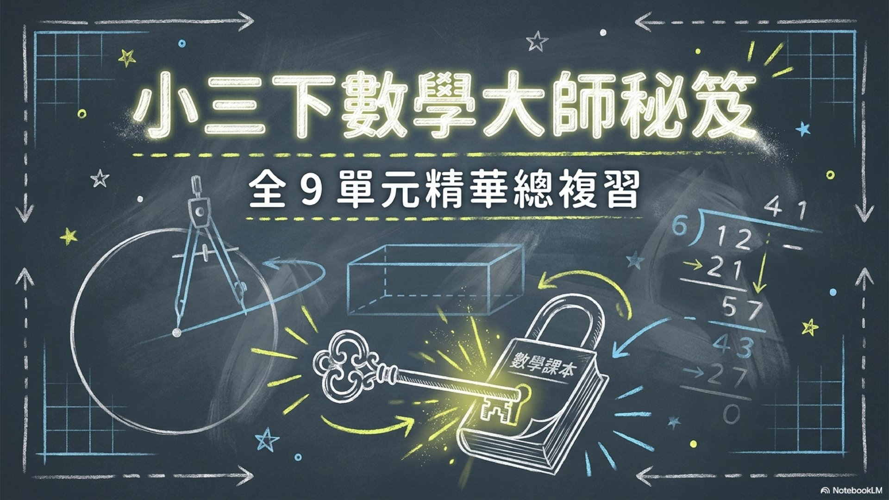
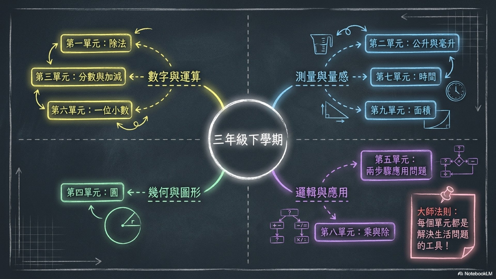
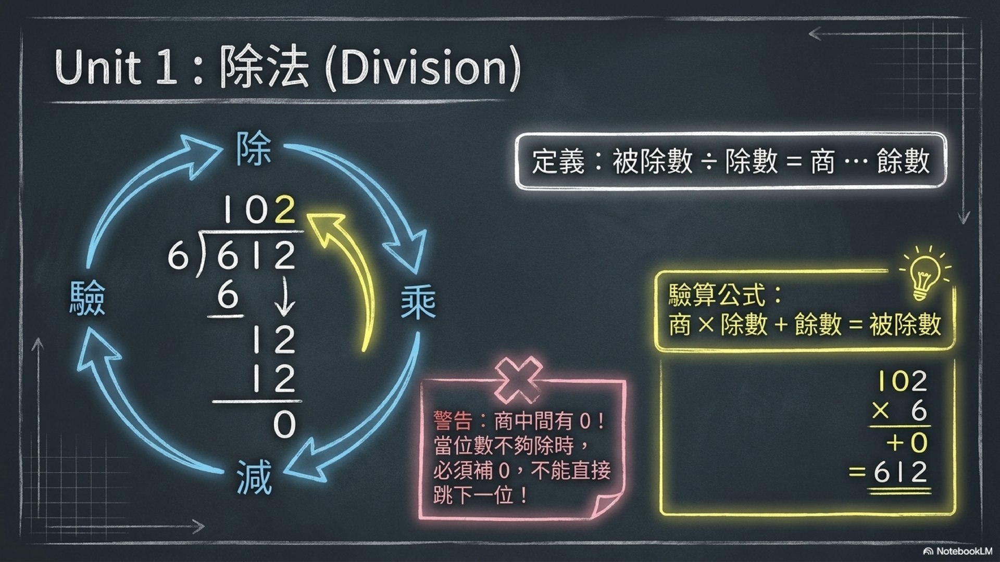
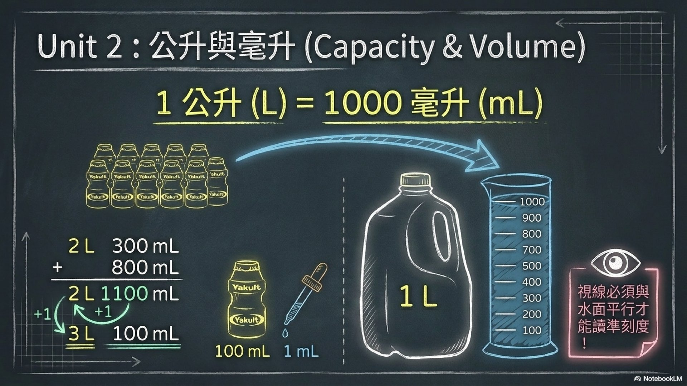
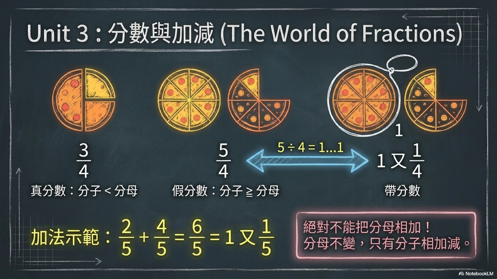
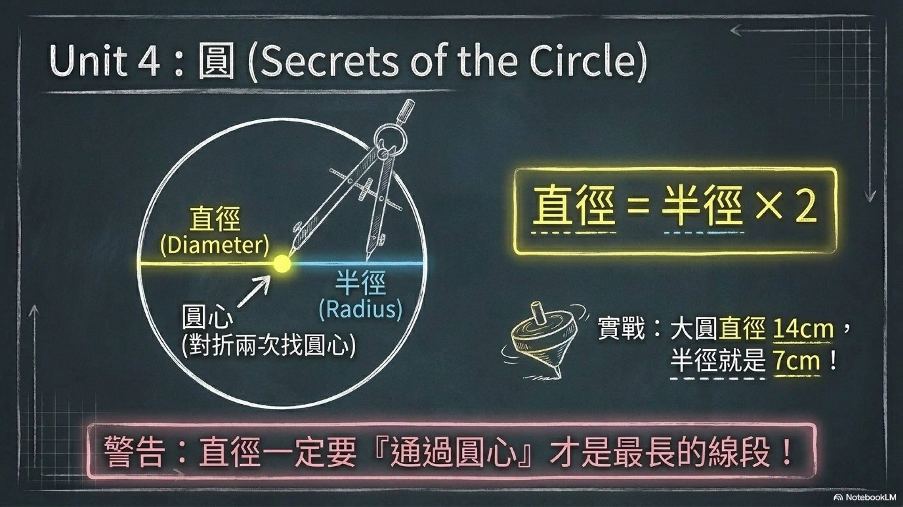
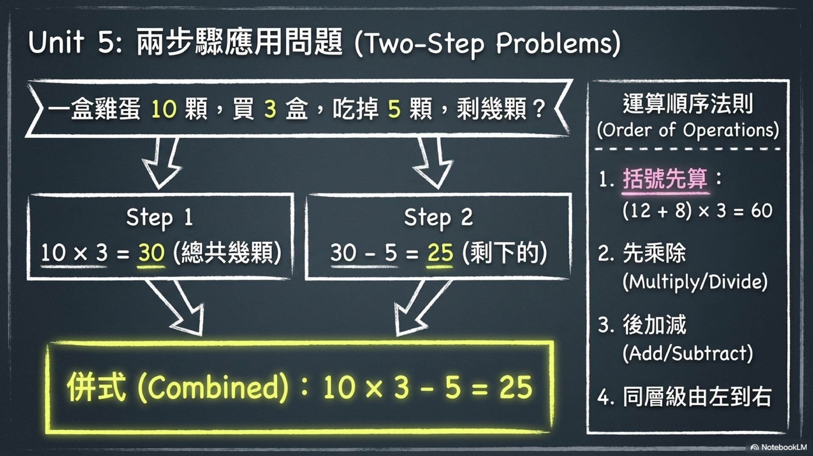
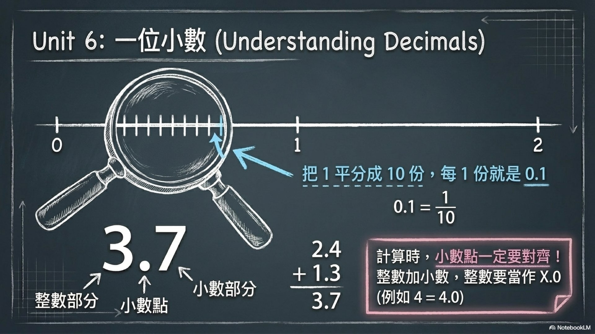
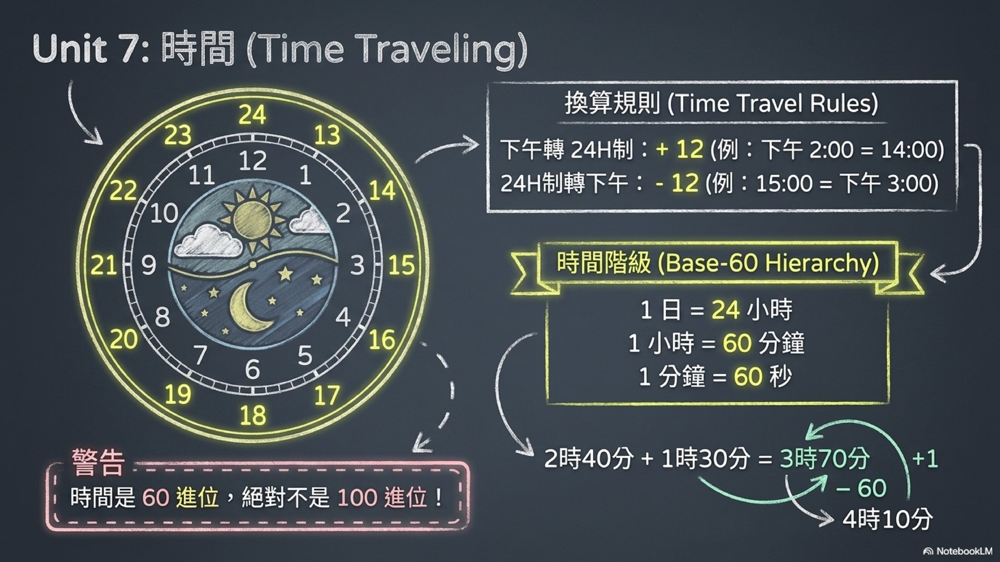
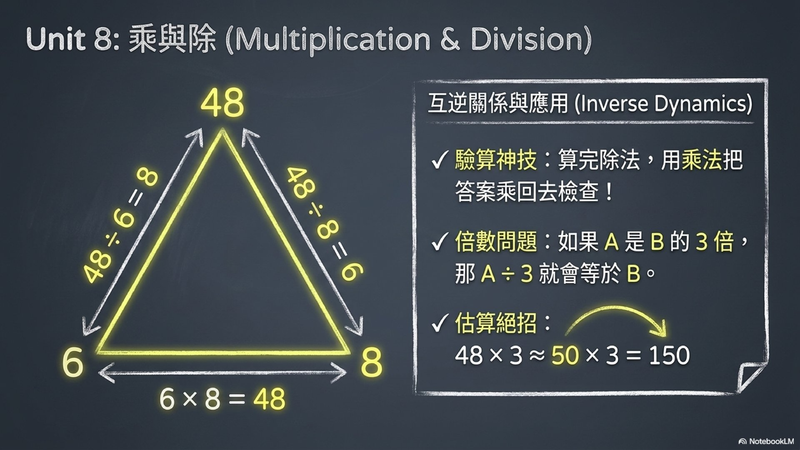
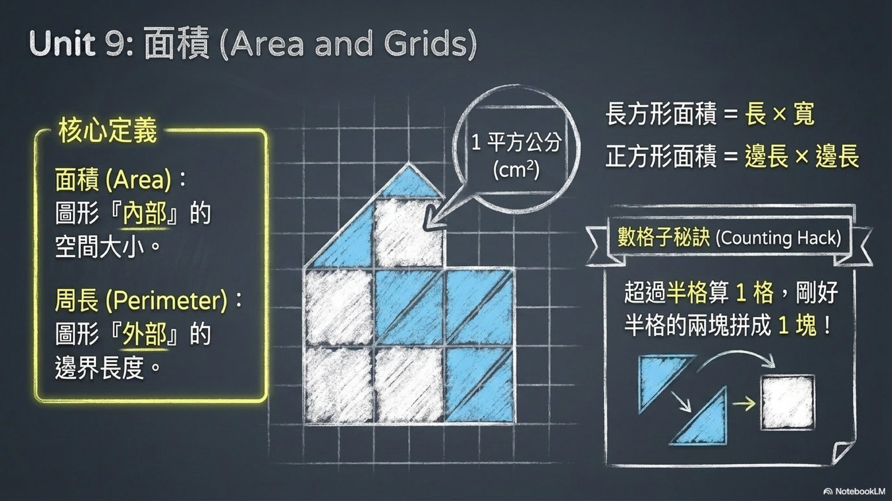
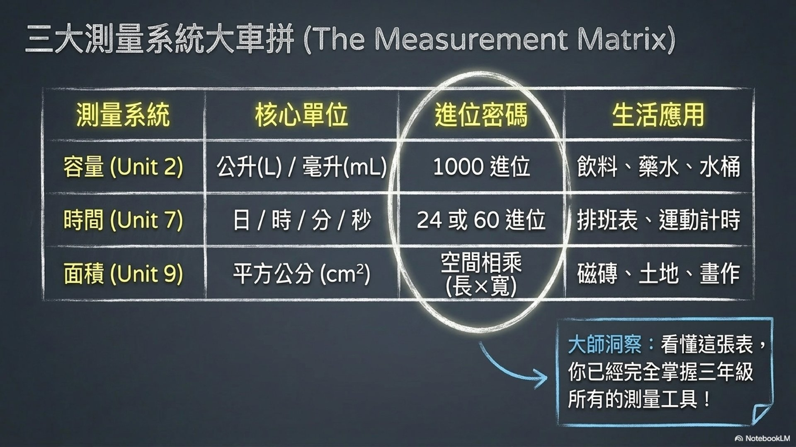
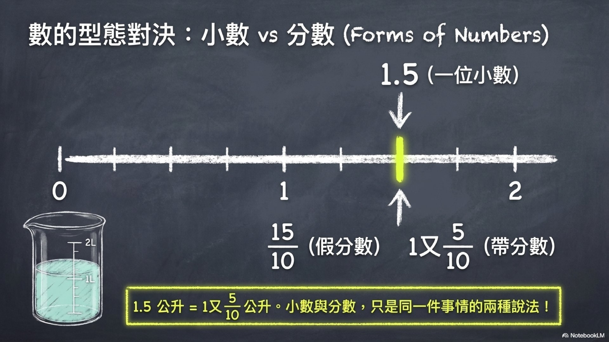
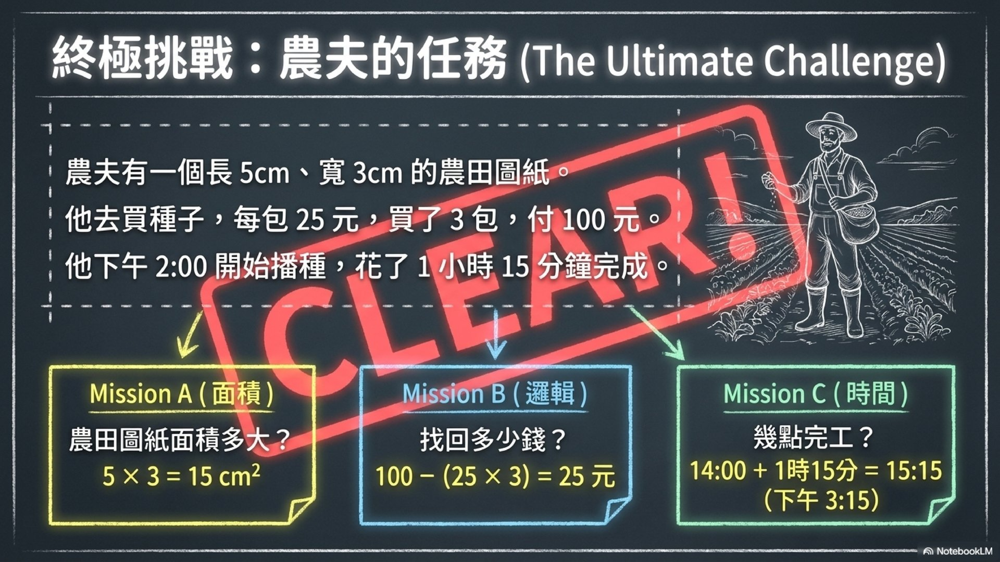
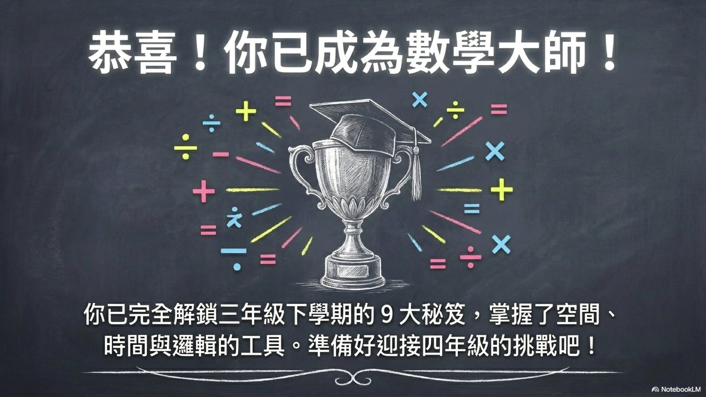
1 / 15
🖼️ 資訊圖表
點擊可全螢幕檢視
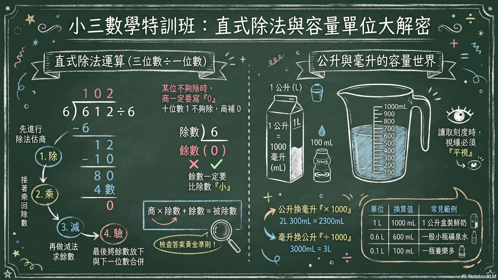
👩🏫 教師備課提示
教學策略
- 實物操作：帶量杯、寶特瓶實物讓學生實際量水
- 生活連結：蒐集不同飲料包裝，讓學生找出容量標示
- 估測練習：先讓學生猜某容器有多少 mL，再實際量測
- 換算口訣：「公升變毫升，乘以一千；毫升變公升，除以一千」
Bloom 三層次差異化
- 記憶理解：說出 1L = 1000mL
- 應用：實際用量杯量出指定容量
- 分析：比較不同容器能裝多少水並解釋原因
易錯點
- 公升和毫升的 1000 倍關係記不住（常誤寫為 100 倍）
- 混合單位加減忘記借位（如 3L 200mL - 1L 500mL）